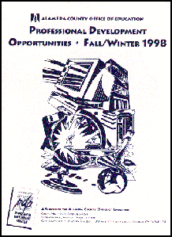

| Professional Development Opportunities
Fall/Winter, 1998 The Alameda County Office of Education is committed to helping educators develop and increase their teaching skills through offering a variety of quality continuing education workshops. Our catalog of fall/winter courses has been distributed throughout Alameda County schools. It can also be downloaded below as a PDF file and read with Adobe Acrobat software (available free from Adobe's website). For additional information, contact Solita Julien, PDP registrar, |
|||
|
|
|||